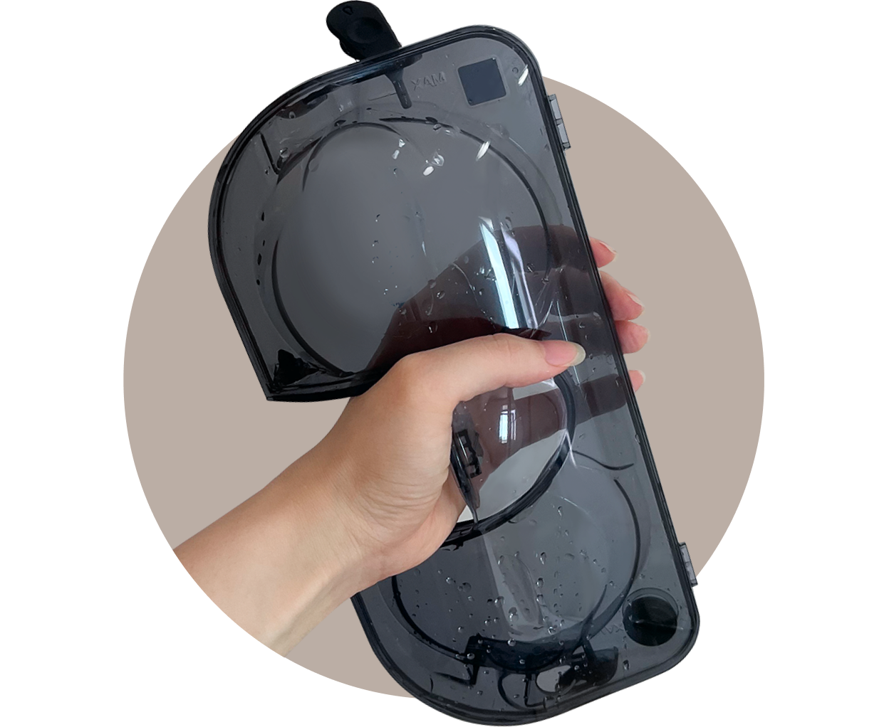

청소/정리무선 청소기


보다 더 스마트한 일상
LG ThinQ의 시작

보다 더 스마트한 일상, LG ThinQ
씽큐는 사람과 가전을 AI 기술로 연결하여 더 편리하고 놀라운 일상을 만드는 LG전자의 스마트 홈 플랫폼입니다.
* 본 콘텐츠는 ThinQ 앱의 콘텐츠입니다.
먼지흡입과 물걸레 청소가 동시에 가능하니 정말 편리하죠?
물걸레 키트는 어떻게 사용하는지 알아볼까요?
01
청소기 전원 끄기
안전을 위해 청소기의 전원을 꺼 주세요.
반드시 전원을 끈 다음 물걸레를 부착하세요. 걸레판이 회전하면 손을 다칠 수도 있어요.
02
물걸레 적시기
물걸레 양면에 물을 적시고 물기를 충분히 짜주세요.
· 마른 걸레를 부착하고 물걸레 청소를 하면 물청소 성능이 떨어져요.
· 물기가 너무 많은 상태로 물걸레를 부착하지 마세요.
03
물걸레 부착하기
물걸레 흡입구를 뒤집어 바닥에 놓고, 물걸레의 가운데 홈을 걸레판 중앙 나사에 맞추어 부착하세요.
· 물걸레의 벨크로가 걸레 부착판을 향하도록 부착하세요. 물걸레를 뒤집어 부착하거나 걸레판 중심에 부착하지 않으면 청소 성능이 떨어지거나 소음이 발생할 수 있습니다.
· 물걸레 흡입구를 바닥에 세게 내려놓거나 던지지 마세요. 바닥 또는 제품이 파손될 수 있습니다.
· 물걸레 흡입구를 발로 밟지 마세요. 제품이 파손될 수 있습니다.
TIP
일회용 걸레포 부착하기
걸레판 위에 보조 걸레판을 부착한 다음 일회용 걸레포를 부착하세요.
01
물걸레 분리하기
물걸레를 걸레판에서 분리하세요.
02
물걸레 세척하기
중성세제로 손빨래하세요.
· 물걸레를 표백제나 섬유 유연제를 사용하여 세척하지 마세요.
· 물걸레를 삶을 경우 변형될 수 있으니 삶지 마세요
03
물걸레 건조하기
물걸레는 바람이 잘 통하는 그늘에서 최소 24시간 이상 완전히 건조하세요.
· 건조기를 사용하여 물걸레를 건조하지 마세요.
· 물걸레가 완전하게 건조되지 않은 상태로 보관하면 냄새의 원인이 될 수 있어요.

01
물통 분리하기
PUSH 버튼을 눌러 물걸레 흡입구에서 물통을 분리하세요.
02
물통 비우기
물통 측면의 2개의 마개를 열고 물을 비운 후 물통을 털어 남은 물을 모두 제거해 주세요.
세척을 위해 세제, 식초, 베이킹소다 등을 물통에 넣지 마세요. 물통 내 세제 등이 제거되지 않아 오히려 바닥이 더러워질 수 있어요.

03
물통 건조하기
물통 양쪽의 마개를 열고 바람이 잘 통하는 그늘에서 최소 24시간 이상 완전히 건조하세요.
· 물통의 물을 완전히 비우고 건조한 후 보관하세요. 물통 내부 습기나 오래된 물 때문에 냄새가 날 수 있습니다.
· 물통 보관 시 물통 마개가 닫히지 않도록 마개 방향을 돌리세요. 마개가 닫혀 제대로 건조되지 않으면 냄새가 날 수 있습니다.
· 물통 마개를 완전히 분리하지 마세요. 마개가 찢어질 수 있습니다.
편리한 물걸레 청소, 올바른 활용 가이드를 따라 사용하면
성능도 수명도 오래도록 유지될 거예요.


LG ThinQ
ThinQ 하나로 더 좋아지는 일상
일상을 더 편하고 스마트하게 만들어주는 씽큐 앱을 지금 바로 만나보세요.
- #스틱청소기
- #청소기
- #청소기사용법
- #물걸레
- #물걸레키트
- #물걸레청소
- #물결레키트사용